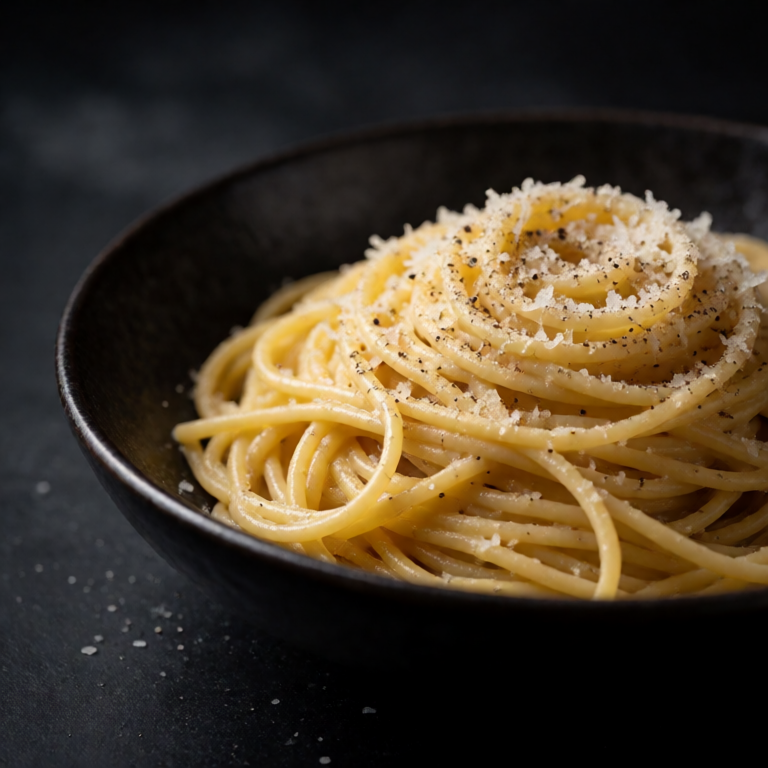
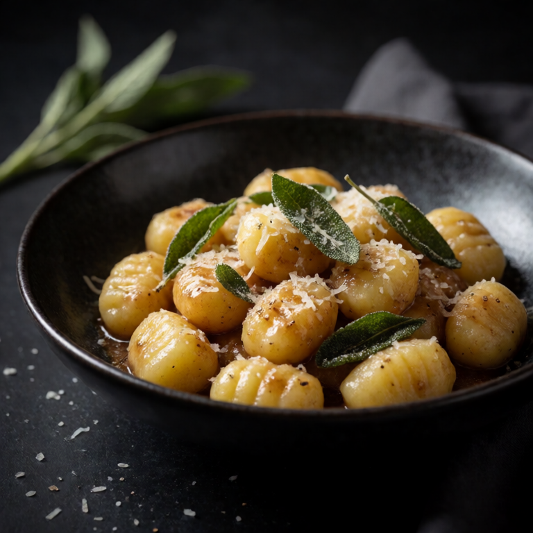

Pillowy store bought gnocchi in nutty brown butter with crispy sage. Ready in 10 minutes.
At a Glance
Prep
2m
Cook
10m
Serves
1
Difficulty
Easy
Ingredients
Method
- 01
Cook gnocchi
Boil the 250g of gnocchi in salted water until they float, about 2 to 3 minutes, then drain.
- 02
Brown butter
In the same pan, melt the 3 tablespoons of salted butter over medium heat. Add the 6 to 8 fresh sage leaves. Cook until the butter turns golden brown and smells nutty, about 3 to 4 minutes.
- 03
Toss
Toss the gnocchi in the brown butter to coat. Top with 30g of grated parmesan and black pepper.
Slop Notes
Watch the butter carefully once it starts foaming. It goes from golden to burnt very fast.
Recipe by foidslop · How we create our recipes